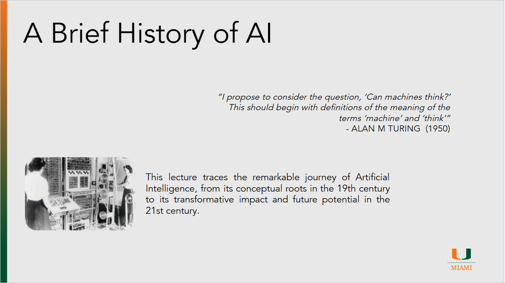

A Breif History of AI

Lecture recording
HW problems
Lecture 1 Homework Problems
1.1 Turing Test (In-Class Activity)
Instructions: - Split into groups of 3. Each group will have: - Interrogator – Creates a list of 5 questions to ask the others. - Human – Answers the questions without using AI. - Chatbot – Uses an assigned LLM to answer the questions (possible models: ChatGPT, Gemini, Copilot, Perplexity, MetaAI, DeepSeek, Claude). - The Interrogator will email the other two participants the questions. - Each participant will respond to the questions. - Groups will create 2 slides showing the questions and both sets of answers. - Email slides to the instructor by XXXXX. - In the next class, we will see if we can identify the human and the AI.
1.2 The Weakness of the Perceptron and the XOR Problem
Background:
- XOR (exclusive OR) takes two binary inputs (0 or 1) and outputs 1 if the inputs are different, and 0 if they are the same.
- Input–output pairs:
- (0, 0) → 0
- (0, 1) → 1
- (1, 0) → 1
- (1, 1) → 0
Instructions: 1. Draw the points: - On a piece of paper, make an X–Y coordinate grid. - Plot the four points: - (0,0) and (1,1) are class 0. - (0,1) and (1,0) are class 1. 2. Attempt to separate: - Try to draw a single straight line separating class 0 from class 1. 3. Answer: - Is it possible? Explain why or why not a single linear decision boundary can solve XOR.
1.3 ELIZA vs Copilot
Instructions: 1. Interact with ELIZA: - Use an online ELIZA chatbot. - Chat for 5–10 minutes with a mix of factual, emotional, and random questions. 2. Compare with a Modern Chatbot: - Use Copilot, Gemini, ChatGPT, or similar. - Compare responses in: - Understanding - Relevance - Ability to handle complex/open-ended questions 3. Reflect: - Write 5–7 sentences comparing ELIZA to the modern chatbot. - Consider: - What ELIZA did well despite its simplicity - Its biggest limitations - How modern AI shows advancements
1.4 AI Rivals
Background: - AI history is full of rivalries that shaped the field. Examples: - Babbage vs. Clement - Turing vs. Lovelace - Rosenblatt vs. Minsky - Kasparov vs. Deep Blue - Hinton vs. Habassis
Instructions: 1. Choose one rivalry or get approval for another. 2. Research both sides: - Summarize each perspective in 3–4 sentences. - Explain what they believed about AI and why they disagreed. 3. Analyze the debate: - Write 5–7 sentences on: - Whose argument you find most convincing - How the outcome influenced AI - Lessons for AI research today
1.5 The Future of AI
Background: - P(doom) = "Probability of Doom": an estimate of catastrophic AI risk. - Opinions vary from highly optimistic to very concerned.
Instructions: 1. Reflect on AI’s future: - Write 5–7 sentences about AI’s impact on work, education, art, science, and daily life. - State whether AI will mostly help, harm, or both — and why. 2. Think about P(doom): - Define P(doom) in your own words. - Write 3–4 sentences on whether it’s high, low, or in between. - Identify factors that could raise or lower it. 3. (Optional): If you were designing AI systems, how would you reduce P(doom)?
1.6 Can AI Think?
Background: - In 1950, Alan Turing asked, “Can machines think?” — a debate still alive today.
Instructions: 1. Define “thinking”: - In 2–3 sentences, explain what thinking means to you. 2. Turing’s Perspective: - Summarize the Imitation Game in 3–4 sentences. - Say whether you agree with Turing’s approach and why. 3. Modern AI Reflection: - Compare a chatbot you’ve used to Turing’s vision. Does it “think” by your definition? 4. Your Opinion: - Write 5–7 sentences answering: Can machines think? Use examples to support.
1.7 How Games Changed AI
Background: - Games have been used to test AI: Checkers, Chess, Backgammon, Jeopardy!, Go, etc.
Instructions: 1. Pick a game: - Choose from the lecture list or another approved example. 2. Explain the choice: - In 3–4 sentences, say why it was chosen to test AI. 3. What did AI learn?: - In 3–4 sentences, describe the strategies or insights discovered. - Did it surprise experts? 4. Modern perspective: - Suggest a modern game to train AI. - Explain in 2–3 sentences why it’s a good challenge.
References
- Computing Machinery and Intelligence
- A Brief History of Time
- Charles Babbage
- Difference Engine
- Ada Lovelace on the Analytical Engine
- Ada Lovelace
- Bernoulli Number
- Note G
- Cybernetics Wikipedia Page
- Cybernetics
- The Imitation Game
- Enigma Cipher Machine
- Mechanical Translation
- History of Natural Language Processing
- Noam Chomsky Syntactic Structures
- First Public Demonstration of Machine Translation
- The Computer and the Brain Wikipedia
- Hodgkin & Huxley Model
- Original Hodgkin & Huxley Paper
- Symbolic AI Wikipedia
- Principia Mathematica
- The Orginal Proposal for the Confrence - http
- Dartmouth Conference Article
- Dartmouth Conference Article IEEE
- Dartmouth Conference Article Dartmouth
- Dartmouth Conference Wikipedia
- The Perceptron Proposal (1957)
- The Perceptron Paper (1958)
- The Perceptron Book
- Mark I Perecptron
- ALPAC Wikipedia
- Original ALPAC Report
- Some studies in machine learning using the game of checkers · link 2)
- Samuel Checkers
- Eliza
- History of ELIZA
- Original Paper
- Online version of ELIZA
- Learning Representations By-Back Propagating Errors
- Hopfeild Network
- IBM Alignment Model
- TD-Gammon Paper
- Deep Blue vs Kasparov
- Tesla Self Driving Miami Lawsuit
- Waymo in Miami
- Shakey the Robot
- Stanley
- IBM Watson
- IBM Video on Watson
- NYT Article about Go (1997)
- AlexNet
- ImageNet Classification with Deep Convolutional Neural Networks
- 2017 Attention is all you Need
- 2018 BERT
- 2020 VIT
- P(doom)
- Hinton Interview
- Habassis interview
- US - Wants to dominate AI
- Trump AI Action Plan
- AI Action Plan Press release
- AI Technology Stack